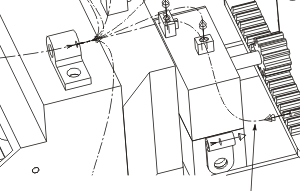
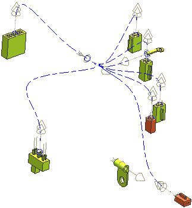

Heal another path from the wire clamp to the spoiler head lamp connector using the Direct method. Use a start extension length of 35 and an end extension length of 10.
Do not be concerned if the path passes through a solid body as you will edit it in the next step.

|
Tip |
You can make the harness assembly easier to see by making it the displayed part.  |